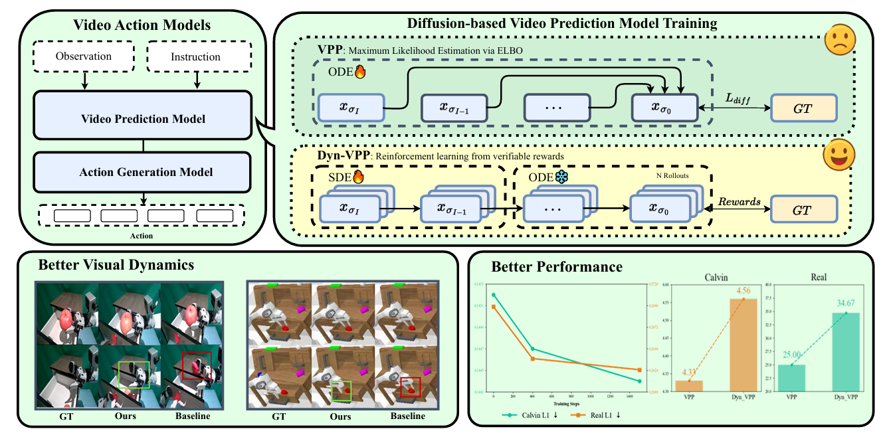
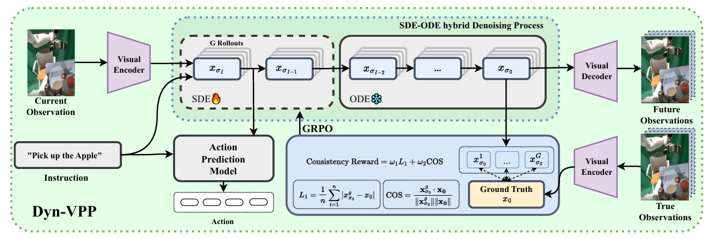
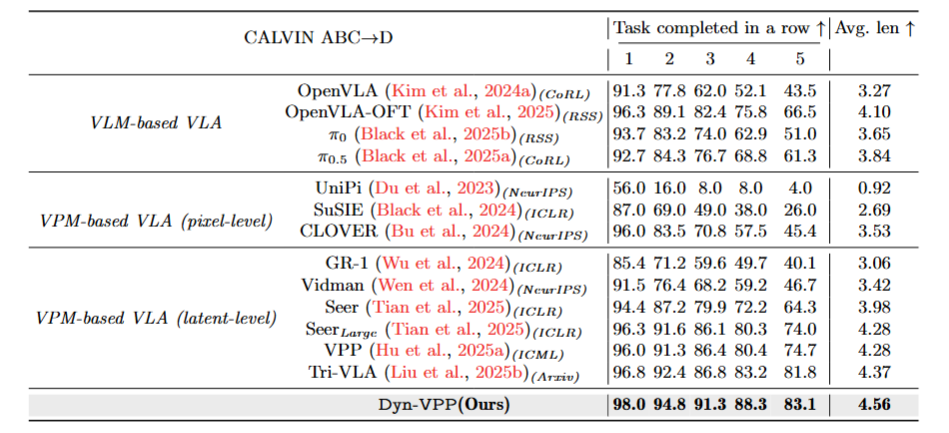
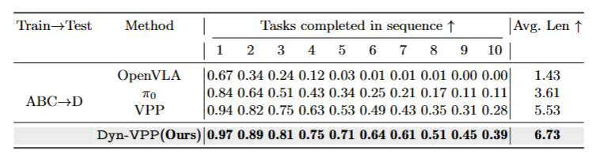
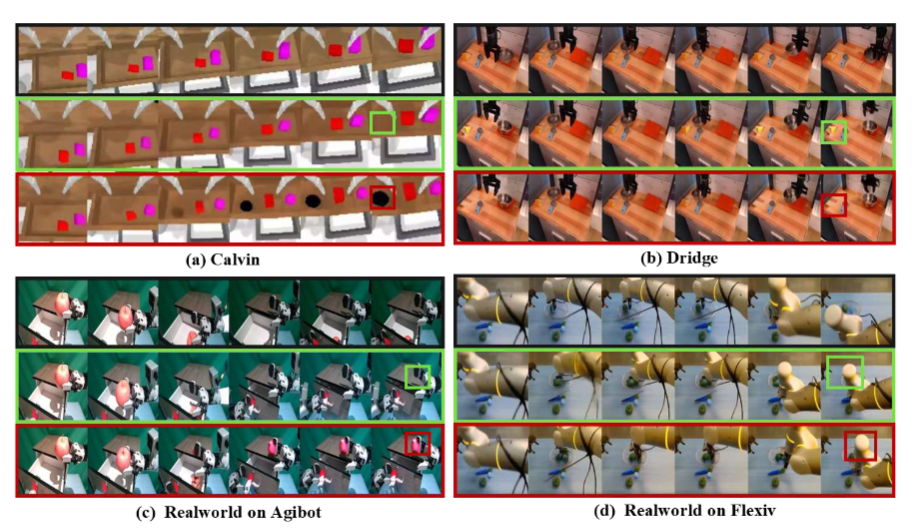
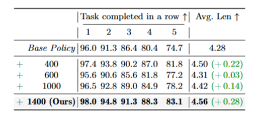
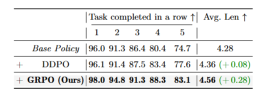
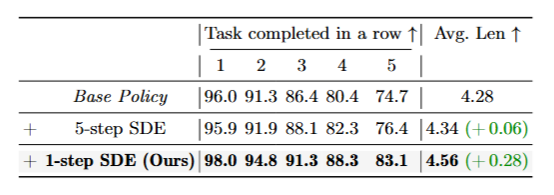
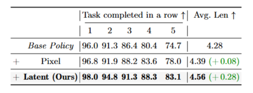
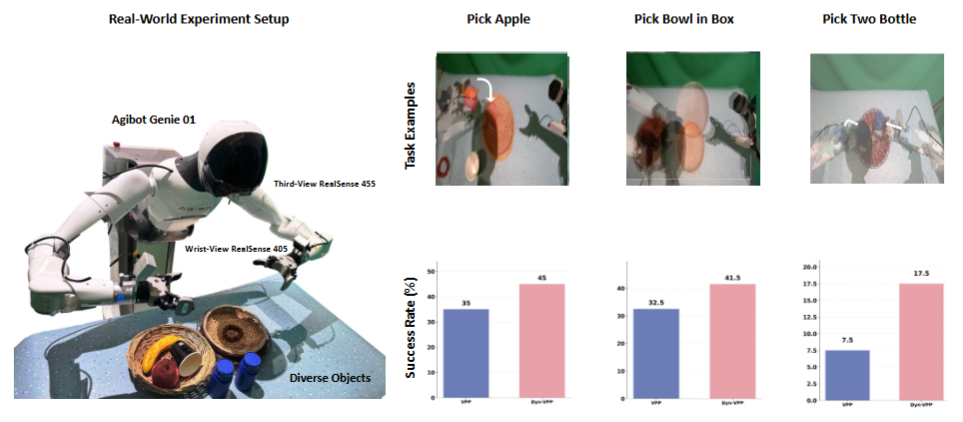

Dyn-VPP: Video Prediction Policy Optimization for Improved Visual Dynamics
Wenxuan Song · Han Zhao · Fuhao Li · Ziyang Zhou · Pengxiang Ding · Donglin Wang · Haoang Li
Why Choose Dyn-VPP?
Dyn-VPP directly optimizes visual dynamics in video prediction models via policy gradient, translating better dynamics into stronger long-horizon manipulation across CALVIN, L-CALVIN, and real-world benchmarks—without any architectural changes.
Abstract
Video action models are a promising foundation for Vision–Language–Action (VLA) because they can learn rich visual dynamics directly from video. However, likelihood-oriented training of diffusion predictors emphasizes globally plausible futures and does not guarantee precision-critical visual dynamics needed for manipulation, so small prediction errors can be amplified by downstream policies.
We propose Dyn-VPP, a post-training framework that casts multi-step denoising as policy optimization and aligns predicted future latents with expert visual dynamics via a verifiable terminal reward, without modifying any architecture. This enables explicit optimization of dynamics signals that are not captured by likelihood-only training. As a result, Dyn-VPP yields more accurate visual dynamics and improves downstream task execution. Experiments across diverse simulated and real-world manipulation settings show improved dynamics consistency and consistently higher task success.
Figure 1. Overall of Dyn-VPP. Our post-training framework introduces reinforcement learning from verified rewards in place of the surrogate objective in Video Action Models, enabling direct optimization of task-specific goals in training video prediction model (VPM). This approach improves the accuracy of VPM's predictive visual representations, leading to enhanced action generation and task performance. Notably, our method demonstrates significant improvements not only in simulated environments but also in real-world scenarios, showcasing its robustness and versatility across diverse settings.
The Model
Figure 2. Overview of the Dyn-VPP training paradigm. In the pre-training stage, the video prediction model (VPM) and action generation model (AGM) are trained on expert demonstrations. In the policy optimization stage, the VPM generates future latents via a hybrid denoising process (SDE at the first step, ODE thereafter); verified rewards are computed by comparing predicted and expert latents, and the VPM is optimized with GRPO to improve precision-critical visual dynamics for downstream action generation.
Dyn-VPP presents a post-training framework that optimizes video prediction policies for improved visual dynamics. Specifically, we (1) formulate video denoising during generation as a Markov Decision Process (MDP); (2) introduce a stochastic sampler (Euler–Ancestral) that makes the denoising trajectory amenable to likelihood-based optimization; and (3) apply GRPO with an Euler Hybrid sampler that injects stochasticity only at the first denoising step, enabling the model to directly align visual dynamics while preserving temporal coherence.
The reward combines L1 distance and cosine similarity in latent space between predicted and expert future representations. By improving the fidelity of learned visual dynamics, Dyn-VPP enables more accurate video predictions, which transfer to downstream policies for more effective action generation.
Questions & Key Findings
We aim to answer the following questions from our experiments:
Figure 3. Evaluation on Visual Dynamics. The figure reports the L1 loss between VPM-generated latents and ground-truth latents over training (quantitative), and qualitative comparisons of predicted vs. ground-truth future observations. The optimized VPM exhibits improved alignment with expert dynamics, including more accurate object poses, spatial relationships, and contact progression.
Table 1. Effectiveness of improved visual dynamics on CALVIN ABC→D. The table reports task completion in a row (1–5), average trajectory length (Avg. Len), average effective rank (Avg. ER), and average ER ratio (Avg. ERR). Post-training both VPM and AGM achieves the best performance; improvements over the base policy are in bold.
Figure 4. SVD analysis comparison between VPP and Dyn-VPP (Ours). Left: singular value spectrum (log scale). Right: cumulative contribution of singular values. Dyn-VPP (Ours) exhibits a more gradual cumulative curve and maintains larger singular values across a broader range of indices, indicating a higher effective rank and richer vision–action coupling.
Results
3.1 Numerical Comparison on Multiple Benchmarks
CALVIN ABC→D
Table 2. Performance on the CALVIN ABC→D benchmark. The table reports task completion in a row (1–5) and average trajectory length (Avg. len) for VLM-based and VPM-based VLAs. Dyn-VPP (Ours) achieves the best performance; our method's row is highlighted.
Table 2 summarizes comparison with VLM-based and VPM-based VLAs on CALVIN ABC→D. Although our method is built upon VPP, our post-training procedure—which directly optimizes visual dynamics without any architectural modifications—substantially improves VPP's performance and also surpasses approaches based on other model families. Compared with prior VPP-based extensions such as Tri-VLA, our method requires neither additional network components nor extra data, yet seamlessly boosts the base model's performance.
L-CALVIN (10-step Long-Horizon)
Table 3. Performance on L-CALVIN (long-horizon). The table reports tasks completed in sequence (1–10) and average trajectory length (Avg. Len) under the ABC→D protocol. Dyn-VPP (Ours) yields the best results across all task lengths; improvements are highlighted.
Our method Dyn-VPP yields larger gains on longer-horizon tasks. This further highlights the importance of improving visual dynamics modeling for long-horizon manipulation, as such tasks involve richer and more diverse dynamics over extended time spans.
3.2 Qualitative Visualization Across Multiple Benchmarks
Figure 5. Qualitative visualization across multiple benchmarks. The figure presents improved action prediction and manipulation quality on CALVIN, Bridge, and real-world platforms (Agibot Genie 01, Flexiv dual-arm robot), demonstrating reduced hallucination, improved planning coherence, and refined execution. Green frames indicate success; red frames indicate failure.
3.3 Evaluation on Core Components (Ablation)
We provide ablation analysis of the core components to validate the effectiveness of each design module.
Post-Training Steps
Table 4. Ablation on post-training steps (CALVIN ABC→D). Success rates and average length for different GRPO step counts. Best performance is achieved at 1400 steps; best values are in bold.
Our method reaches relatively strong performance within only 400 post-training steps. Despite fluctuations, it consistently outperforms the base policy and achieves best performance at 1400 steps.
Optimization Algorithm: DDPO vs. GRPO
Table 5. Ablation on optimization algorithm. Comparison of DDPO and GRPO on CALVIN ABC→D. GRPO (Ours) achieves the best performance.
GRPO consistently outperforms DDPO under the same base policy. We hypothesize that the within-group optimization and clipping scheme in GRPO lead to more stable and informative gradient updates.
Hybrid Denoising: 5-step SDE vs. 1-step SDE
Table 6. Ablation on hybrid denoising: SDE at 5 steps vs. 1 step. Applying SDE only at the first step (Ours) yields the best performance and mitigates reward hacking.
Applying SDE only at the first step (Ours) yields the best performance and mitigates reward hacking: the first-step output is fed directly to the policy, whereas perturbing later steps may encourage unintended exploitation.
Reward Type: Pixel vs. Latent
Table 7. Ablation on reward type: pixel-level vs. latent-level reward on CALVIN ABC→D. Latent-space reward (Ours) achieves the best performance.
The latent-space reward achieves better performance. Pixel-level consistency does not necessarily imply more accurate visual dynamics modeling, whereas latent representations are more aligned with the underlying dynamics and task-relevant semantics.
3.4 Real-World Evaluation
Real-world experiments are conducted on the Agibot Genie 01 dual-arm robot. We consider three tasks: (1) grasping a specified target (apple) in clutter, (2) single-arm precise pick-and-place of a plate onto a central saucer, and (3) bimanual simultaneous grasp-and-place of two bottles onto a central plate.
Figure 6. Real-world evaluation across multiple task benchmarks. The figure reports performance on three manipulation benchmarks—grasping in clutter, single-arm pick-and-place, and bimanual grasp-and-place—on the Agibot Genie 01 platform. Dyn-VPP (Ours) achieves the best performance across all tasks.
Our Dyn-VPP consistently outperforms the base policy in real-world scenarios, demonstrating the effectiveness and robustness of the proposed approach.
BibTeX
@article{song2025dynvpp,
title = {Dyn-VPP: Video Prediction Policy Optimization for Improved Visual Dynamics},
author = {Wenxuan Song and Han Zhao and Fuhao Li and Ziyang Zhou and
Pengxiang Ding and Donglin Wang and Haoang Li},
journal = {arXiv preprint},
year = {2025}
}